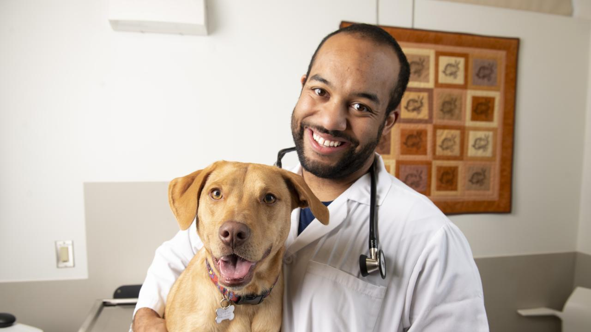

Expert Pet Care

Imagine a future where pets and people are even better when they are together and the benefits that come with it are recognized by everyone. Imagine a society that celebrates all that our pets give us, as well as all that we ourselves can do for them. From better health to a happier workplace, there's so much we can do for each other - and we want to make it happen.There are many options available for your pets with us:
Vaccines help prevent many illnesses that affect pets. Vaccinating your pet has long been considered one of the easiest ways to help him live a long, healthy life. Not only are there different vaccines for different diseases, there are different types and combinations of vaccines. Vaccination is a procedure that has risks and benefits that must be weighed for every pet relative to his lifestyle and health. Your veterinarian can determine a vaccination regime that will provide the safest and best protection for your individual animal.

With an experienced, qualified vet or specialist vet. As needed with other specialist veterinary teams within the hospital so that your pet can benefit from the advice of all the veterinary experts in their field.

The six basic nutrients are water, proteins, fats, carbohydrates, minerals, and vitamins. While good nutrition is important for all dogs, it’s especially critical for growing puppies due to their special nutritional needs. Therefore, you’ll want to be sure you’re selecting best food for your new family member.

With a little know-how and a lot of patience, you can train your pet to perform many behaviors. You can apply animal training techniques to almost any kind of pet. Positive reinforcement is the key to strengthening behaviors. Use a variety of interesting, stimulating, and fun rewards - snacks, toys, a back scratch, or favorite activity are all good examples.A cat lies in the grass looking toward the camera.You can apply animal training techniques to almost any kind of pet.Train behaviors in small steps so your pet doesn't fail too often and become frustrated. Give your pet a lot of attention and a variety of rewards for each correct response. Only reinforce a behavior you want your pet to repeat; don't call attention to incorrect behavior.
Pet shop offers over 5000 items in one place.

We explain the benefit of our products Work for an harmonized, efficient, and transparent regulatory framework.We promote Innovation in emerging diseases or responsible prescription of antibiotics.We dialogue and collaborate with other Animal Health institutions and stakeholders
Your Pet, Our Love
Once found throughout south-east Asia, Javan rhinos have suffered a staggering decline in their numbers due to hunting and habitat loss. The lone wild population of Javan rhinos is one of the rarest of the rhino species—around 75 individuals—which can only be found on the island of Java, Indonesia. The Ujung Kulon National Park, a World Heritage Site, is the last remaining refuge of Javan rhinos. But the area also suffers from the invading Arenga palm, leaving the rhinos with less food to eat and less habitat to roam. Besides, the small Javan rhino population is also extremely vulnerable to extinction due to natural catastrophes, disease, poaching and potential inbreeding.
The Amur leopard is one of the rarest big cats in the world, with only around 100 individuals left in the wild. Although their wild population seems to be stable and increasing, these leopard subspecies are still critically endangered since 1996. And there is a good reason that: Amur leopards can only be found in a relatively small region of the far east of Russia and north-eastern China at present. The remaining Amur leopards face multiple threats to their survival, including habitat loss and fragmentation, prey scarcity and transportation infrastructure such as roads. However, there is hope for this rare big cat. Around 75% of their home range lies in protected areas in Russia and China, and they are also moving into suitable habitats outside of these protected areas.
WIEW ALL SERVISESThe Sunda Island tiger, or the Sumatran tiger, is the smallest tiger subspecies in the world, weighing up to 140kg. For reference, the tigers that live in the Amur region are the biggest of all the big cats where males can weigh up to twice as much as Sunda Island tigers. They are also very rare - there are estimated to be around 600 in the wild, and are only found on the Indonesian island of Sumatra. Since the 1980s, the human population of south-east Asia has nearly doubled from 357 million to around 668 million in 2020. And this has had an impact on tiger numbers, which have been shrinking along with their habitats. As human settlements expand in the region, Sunda Island tigers are increasingly likely to encounter people, which could lead to a further rise in human-tiger conflict. Tiger poaching and illegal trading of tiger parts and products are also of serious concern to their survival.
veterinary experts and veterinary nurses
Baltej Singh
"We are dedicated to helping pets live longer, happier and healthier lives thanks to proper nutrition and care. Our main responsibility is to ensure safe, tasty and nutritious products that meet the highest quality and safety standards. We understand and share the intense feeling of love and respect that owners have for their pets, since most of us have pets ourselves. Therefore, at Purina, the well-being of dogs and cats is our top priority and responsibility, which we will never question."
2 days ago
Marie Rakun
"Checked veterinary clinics provide top-notch professional care, and boarding houses for dogs or cats are at your disposal when you have to travel and want to be sure that your pet is safe and carefree."
3 days ago
John Bargo
"Also, a number of on-call veterinary clinics perform emergency interventions 24 hours a day, throughout the year, which means that even during the holidays you can count on the support of experts when it comes to pets."
4 days ago
Anna Shena
"Your pet will have all the conditions for excellent care, nutrition and recreation when you return."